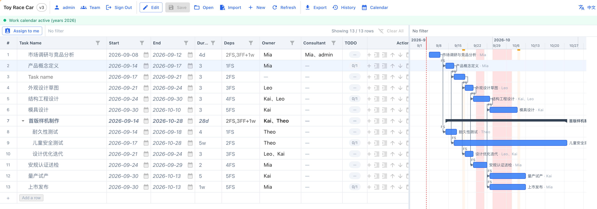
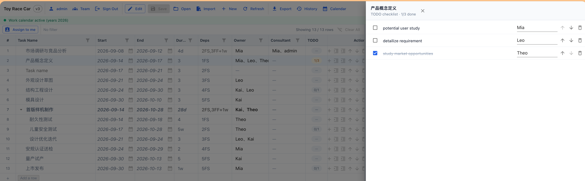

可视化甘特图
任务按天/周/月排期，依赖关系与里程碑一键呈现。日期计算走工作日历，跳过周末与节假日。
PROJECT PLANNING WITH CHECKLIST
轻量级项目管理工具。甘特图排期、任务表拆分、TODO 验收清单——全在单机运行，所有数据留在自己的机器上，零外部依赖。
从排期到验收，从单人计划到团队协作，9 项功能一条都不少。
任务按天/周/月排期，依赖关系与里程碑一键呈现。日期计算走工作日历，跳过周末与节假日。
每个任务挂验收项，分配到人或并入 owner。所有权清晰可见，验收不靠记忆。
每条任务支持主负责人 + 协作者，工作量分配透明，跨人协作不再"谁在干"的扯皮。
每次保存留版本，任意历史可一键回滚。再也不怕误操作。
30 秒心跳，告诉团队"我正在改这个计划"。多人协作也能井井有条。
MSPDI XML（Microsoft Project）、CSV、Markdown 任务清单。三方协作无障碍。
跳过周末与国定节假日（按计划开关）。3 天排到 8/29 还是 8/28，绝不歧义。
macOS 双击 .command 启动，Windows 双击 .bat 启动。无需懂 Node.js。
服务端 REST API、CSV/JSON 数据交换。CI / 报表工具想接就接。
主界面：甘特图 + 任务表 + 依赖关系，所有信息一目了然。


简洁、现代、零外部依赖。
不用注册、不用申请 key，本机 30 秒拉起。
git clone https://github.com/keil2005/project-planning-with-checklist.git
cd project-planning-with-checklistnpm installnpm startmacOS / Windows 也有 .command / .bat 一键启动器，无需命令行的同事也能开。
完整文档、Contributing、Security、CoC 一并在仓库内。